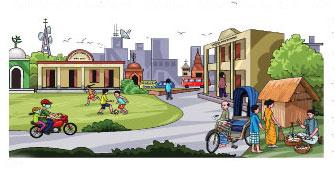
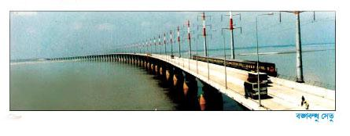
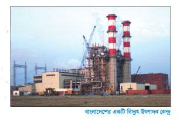

অধ্যায় ৮
সামাজিক এবং রাষ্ট্রীয় সম্পদ
১ সামাজিক সম্পদ
জীবনযাপনের জন্য যা কিছু আমাদের প্রয়োজন মেটায় সেসবই হচ্ছে সম্পদ। মানুষের জীবনযাপনের মান উন্নয়নের জন্য বিভিন্ন ধরনের স্থানীয় সুযোগ সুবিধাকে সামাজিক সম্পদ বলা হয়। এই সুবিধাগুলো সরকারি বা বেসরকারিভাভাবে পাওয়া যায়।
বিদ্যালয়
প্রত্যেক শিশুরই শিক্ষার অধিকার আছে। শিক্ষালাভ করা সামাজিক অধিকার। পড়ালেখা শিখে যাতে জীবনযাপনের মান উন্নয়ন করতে পারে এ জন্য প্রতিটি এলাকায় বিদ্যালয় আছে। গ্রামে ও শহরে বিদ্যালয় গড়ে তোলা হয়েছে যেন সব শিশু পড়ালেখা শেখার সুযোগ পায়
হাসপাতাল
হাসপাতাল হলো আরেকটি সামাজিক সম্পদ যা সমাজে মানুষের স্বাস্থ্যসেবা প্রদান করা হয়। এখানে ডাক্তার ও নার্স রোগীদের সুস্থ হয়ে উঠতে চিকিৎসা দেন ও সেবা-যত্ন করেন।
ধর্মীয় প্রতিষ্ঠান
সমাজে বিভিন্ন ধর্মের মানুষের জন্য রয়েছে ধর্মীয় প্রতিষ্ঠান। মুসলমানদের মসজিদ, হিন্দুদের মন্দির, বৌদ্ধদের প্যাগোডা এবং খ্রিষ্টানদের জন্য আছে গির্জা।
পার্ক ও খেলার মাঠ
গ্রাম ও শহরের অনেক এলাকায় খেলার মাঠ আছে যেখানে শিশুরা খেলাধুলা করে। অনেক এলাকায় পার্ক আছে যেখানে পরিবারের সকলে ঘুরে আনন্দ লাভ করেন।
এসব সামাজিক সম্পদ আমাদের এলাকার সামাজিক পরিবেশের মানকে উন্নত করে। সামাজিক সম্পদের রক্ষণাবেক্ষণ করা আমাদের সকলেরই দায়িত্ব।

ক । এসো বলি
তোমার এলাকায় কী কী সামাজিক সম্পদ আছে তা শিক্ষকের সহায়তায় শ্রেণিতে আলোচনা কর।
-
তোমার এলাকায় কোন কোন বিদ্যালয় আছে?
-
আশেপাশে কি কোনো হাসপাতাল আছে?
-
কোন কোন ধর্মীয় প্রতিষ্ঠান আছে?
-
কোনো পার্ক ও খেলার মাঠ আছে কি?
-
এছাড়া আর কী কী সামাজিক সম্পদ আছে?
খ । এসো লিখি
বিভিন্ন ধরনের সামাজিক সম্পদ তোমার এলাকায় কী সুবিধা দিচ্ছে তা লেখ। কাজটি জোড়ায় কর।
| সামাজিক সম্পদ | বিভিন্ন সুবিধা |
|
বিদ্যালয় |
- |
|
হাসপাতাল |
- |
| ধর্মীয় প্রতিষ্ঠান |
- |
| খেলার মাঠ |
- |
গ। আরও কিছু করি
তোমার এলাকার বিভিন্ন সামাজিক সম্পদের ছবি আঁক এবং সেগুলোর নাম লেখ।
তোমার আাঁকা ছবিগুলোর মধ্যে থেকে যেকোনো একটি সামাজিক সম্পদ তোমার এলাকার মানুষদের কীভাবে সাহায্য করছে তা লেখ।
ঘ । যাচাই করি
আমাদের সামাজিক সম্পদের রক্ষণাবেক্ষণ করা উচিত কারণ ……………………………………………
…………………………………………………………………………………………………………………….
৪০২ রাষ্ট্রীয় সম্পদ
আরেক ধরনের সম্পদ আছে যা সরকার আমাদের ব্যবহারে জন্য তৈরি করে। এগুলোকে রাষ্ট্রীয় সম্পদ বলা হয়। আমরা সরকারকে যে কর দিই তা দিয়ে রাষ্ট্র এই সম্পদগুলো তৈরি ও রক্ষণাবেক্ষণ করেন।
সড়ক
সরকার আমাদের চলাচলের সুবিধার জন্য সড়ক বা রাস্তা তৈরি করে এবং প্রয়োজন এগুলো মেরামত করে। আমাদের শহরগুলোতে আছে বড় পাকা রাস্তা এবং গ্রামগুলোতে আছে কাঁচা রাস্তা। আমরা একস্থান থেকে অন্যস্থানে যাতায়াত এবং মালামাল আনা-নেওয়ার কাজে সড়ক ব্যবহার করি। এছাড়া সড়ক পথে রাষ্ট্রীয় ব্যবস্থাপনায় যে যানবাহনগুলো চলে তা আমরা সকলেই ব্যবহার করতে পারি।
রেলপথ
সড়কপথের মতোই আমাদের দেশে রয়েছে দীর্ঘ রেলপথ। অসংখ্য মানুষ রেলগাড়িতে চলাচল করেন। রেলগাড়িতে সহজে অনেক মালামাল আনা-নেওয়া করা যায়।
সেতু
আমাদের দেশে বড় বড় নদী আছে, তাই আমাদের অনেক সেতু দরকার। গ্রামে আছে ছোট ছোট বাঁশের তৈরি সাঁকো। অনেক নদীর উপর সড়ক ও রেলপথের জন্য দীর্ঘ সেতু আছে। আমাদের কয়েকটি দীর্ঘ সেতু হলো বঙ্গবন্ধু সেতু, চীনমৈত্রী সেতু এবং লালন-শাহ সেতু। এতে মানুষের যাতায়াতের সুবিধা হয়েছে। পদ্মা নদীর উপর আরেকটি বড় সেতু নির্মিত হচ্ছে।

ক । এসে বলি
সরকার আমাদের কী ধরনের সুবিধা দিয়ে থাকে তা শ্রেণিতে শিক্ষকের সহায়তায় আলোচনা কর।
-
তোমার বাড়ির কাছে সবচেয়ে বড় সড়ক কোনটি?
-
তোমার বাড়ির সবচেয়ে কাছের রেলস্টেশন কোনটি?
-
তোমার বাড়ির কাছে বড় সেতু কোনটি?
-
বাস ও রেলের সাথে কোন কোন পেশা জড়িত?
-
তোমরা কী সড়ক, রেলপথ, সেতু মেরামত বা তৈরি করতে দেখেছ?
খ . এসো লিখি
নিচের ছকে দেওয়া প্রত্যেক ধরনের পরিবহন ব্যবস্থার সাথে সম্পর্কিত কাজগুলো লেখ।
|
- | বিভিন্ন ধরনের কাজ |
|
সড়ক |
সড়ক মেরামত করা, |
|
রেল |
- |
|
নৌকা |
- |
|
আকাশপথ |
উড়োজাহাজের টিকেট বিক্রি করা |
গ । আরও কিছু করি
উপরে দেওয়া যেকোনো ধরনের পরিবহন ব্যবহার করে একটি ভ্রমণের অভিজ্ঞতা বর্ণনা কর।
ঘ । যাচাই করি
রাষ্ট্রীয় সম্পদের সাথে বিভিন্ন পেশার মিল কর।
| সড়ক বিমান সেতু | পাইলট চালক প্রকৌশলী |
৩ আরও কিছু রাষ্ট্রীয় সম্পদ
নিম্নে বর্ণিত রাষ্ট্রীয় সম্পদগুলোর উৎস প্রকৃতি। প্রাকৃতিক পরিবেশ থেকে আমরা যা কিছু পাই তাই প্রাকৃতিক সম্পদ। এই সম্পদগুলো আমাদের জীবনকে অনেক সহজ করে দেয়।
পানি
আমরা বৃষ্টি, নদনদী, ঝরনা ইত্যাদি থেকে বিশুদ্ধ পানি পাই। পান করা, রান্না করা এবং পরিস্কার করার কাজে আমরা বাড়িতে পানি ব্যবহার করি। কৃষকেরা চাষাবাদের কাজে পানি ব্যবহার করেন। আমরা জলপথে যাতায়াত করি এবং নদী বা সমুদ্রপথে মালামাল পরিবহন করতে পারি। শহরে পাইপ লাইনের মাধ্যমে বাসায়, অফিস-আদালতে এবং কারখানায় বিশুদ্ধ পানি সরবরাহ করা হয়। এছাড়া বড় বড় শিল্প-কারখানায়ও পানির প্রয়োজন। এভাবে নানা কাজে আমাদের পানির প্রয়োজন হয়।
বন
বন হলো আরেকটি প্রাকৃতিক সম্পদ। বনে অনেক ধরনের গাছ জন্মে। বনের গাছ থেকে আমরা ঘরবাড়ি ও আসবাবপত্র নির্মাণের জন্য কাঠ এবং খাওয়ার জন্য ফল পাই। বন বিভিন্ন প্রাণীকে নিরাপত্তা দেয়।
প্রাকৃতিক গ্যাস
প্রাকৃতিক গ্যাস একটি প্রাকৃতিক সম্পদ যা মাটির নিচ থেকে উত্তোলন করা হয়। বিদ্যুৎ উৎপাদন, রান্না এবং পরিবহনের কাজে আমরা প্রাকৃতিক গ্যাস ব্যবহার করি। অনেক যানবাহন প্রাকৃতিক গ্যাস দিয়ে চলে। শিল্প কারখানায়ও প্রাকৃতিক গ্যাস ব্যবহার করা হয়।
বিদ্যুৎ
বিভিন্ন প্রাকৃতিক সম্পদ যেমন-বাতাস, সূর্যের আলো, গ্যাস, তেল, পানি ইত্যাদি দ্বারা বিদ্যুৎ উৎপাদিত হয়। বিভিন্ন বৈদ্যুতিক কেন্দ্র থেকেও বিদ্যুৎ উৎপাদন করা হয়। আলো জ্বালাতে, রান্নায়, কম্পিউটার ও টেলিভিশন চালাতে এবং শিল্প উৎপাদনে আমরা বিদ্যুৎ ব্যবহার করি।

ক। এসো বলি
-
শিক্ষকের সহায়তায় আলোচনা কর।
-
আমরা প্রাকৃতিক সম্পদ কোথা থেকে পাই?
-
এই অধ্যায়ে দেওয়া সম্পদগুলোকে কেন রাষ্ট্রীয় সম্পদ বলা হয়?
-
বিভিন্ন কাজ করতে এগুলো কীভাবে আমাদের সাহায্য করে?
-
আমরা কীভাবে প্রাকৃতিক সম্পদের সঠিক ব্যবহার করতে পারি?
-
প্রাকৃতিক সম্পদ শেষ হয়ে গেলে কী হবে?
খ। এসো লিখি
নিচের ছকে প্রত্যেকটি প্রাকৃতিক সম্পদের বিভিন্ন ব্যবহার লেখ। কাজটি জোড়ায় কর।
| প্রাকৃতিক সম্পদ | বিভিন্ন ব্যবহার |
|
পানি |
- |
|
বন |
- |
|
প্রাকৃতিক গ্যাস |
- |
|
বিদ্যুৎ |
- |
গ। আরও কিছু করি
আমরা কীভাবে প্রাকৃতিক সম্পদ সংরক্ষণ করতে পারি? বাড়িতে কীভাবে পানি, জ্বালানি এবং বিদ্যুতের ব্যবহার কমানো যায় তার একটি তালিকা তৈরি কর।
ঘ। যাচাই করি
বিভিন্ন প্রাকৃতিক সম্পদের সাথে এগুলোর ব্যবহারের মিল কর।
| প্রাকৃতিক গ্যাস পানি বাতাস বিদ্যুৎ বন | কাপড়-চোপড় পরিষ্কার করা পাল তেলা নৌকা রেডিও/বেতার আসবাবপত্র তৈরি সিএনজি চালিত যান |